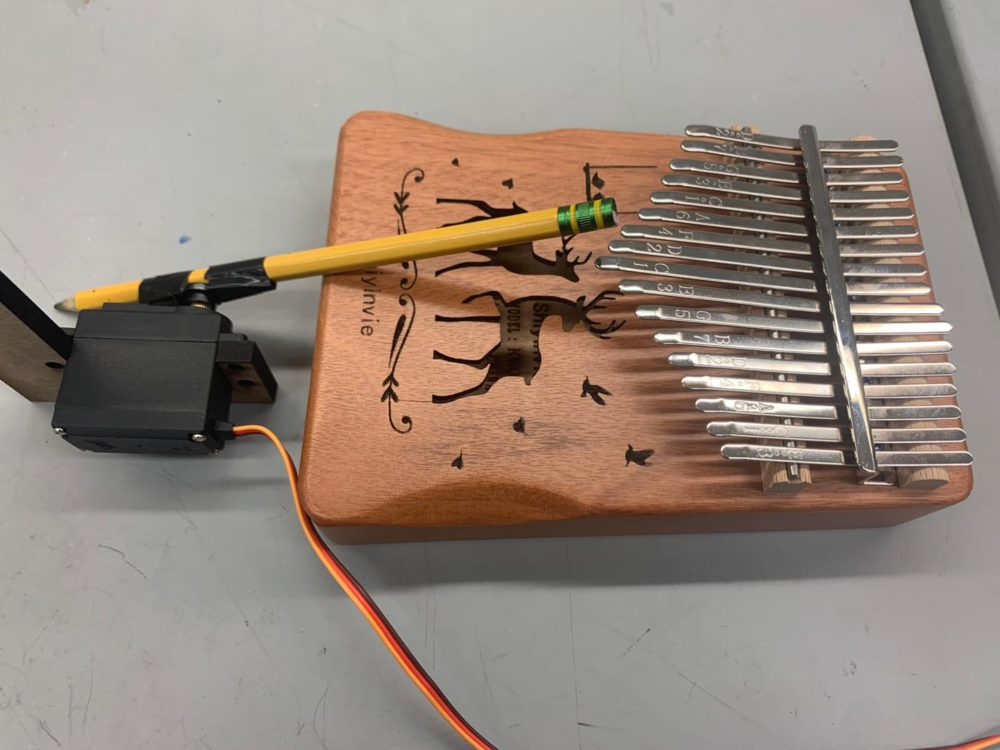

Our music box player design was inspired by Tim Alex Jacobs’s MIDI music box mechanism, documented here. Both Tim’s and our designs utilize an existing off-the shelf music box and add an additional mechanism so that it can be controlled using a computer. Our addition takes advantage of the music box’s main mechanism, an axle with free-spinning wafers that, when prompted either by a hole punched in paper or by our mechanism, will engage with the axle for one rotation in order to pluck the tines of a fork. To play a note, our mechanism pushes a piece of spring wire into the wafer using a servo motor. This idea for the music box player mechanism is the same as Tim Alex Jacobs’s, but we designed and built it from scratch so we could make some changes to the overall dimensions and layout, and to maximize our learning.
In order to play a full two octaves, we needed 16 assemblies of motors and spring wire. We designed and fabricated the following subsystems in order to connect the wires, motors, and music box together: a casing box to hold the components, a servo mounting plate, and a railing plate to guide the wires towards the wafers. CAD models for the overall mechanical system can be found at our GrabCAD project.
We had a clear aesthetic vision for our music box from the beginning of the project: we wanted to evoke a natural, fairytale-inspired mood. Our earliest aesthetic design sketch, shown below, depicts the overall music box mechanism as a half log with moss and mushrooms growing on it.
As a result, when designing the outer casing for the music box, we started with a simple box, but added a half-cylindrical roof to mimic the shape of a log. We also made it out of natural materials-- plywood and hardboard. Dimensions of the casing were chosen after making a cardboard mock-up and fitting the components inside, for an overall footprint of 6.25x12”. The sides of the box connect to each other using finger joints and wood glue. The roof of the box was made using a series of six half-circle “rib” cutouts and three interlocking supports. The outer radius of the ribs are designed to sit flush with the outside of the box, but have a notch so that they can snap fit into the main box rectangle. The two parts fit together as shown in the render above.

At the end of Sprint 2, we had completed the version of the casing shown above. During Sprint 3, we added a covering to the rib roof structure. While we considered using sheet plastic and vacuum forming to build it, we eventually decided to go with a plywood living hinge to avoid the shiny and artificial aesthetics of the plastic. The living hinge part was a 12x12” square with a small cutout in the back to route the wires. We also decorated the casing with bark and some clay woodland animals, shown in the photo below.
After deciding that we would use servos to perform the push-retract motion for the music box we needed to design a mount to keep them all in place. Through a lot of trial and error from the previous sprints we determined the best placements for 16 servos that would control the music box. We needed to find an efficient way to fit all the servos in the small chassis we alloted ourselves while also aligning the ends of each horn to a tooth in the music box assembly. This alignment is so that the spring wire attached to each one can hit all of the adjacent wafers of the music box. We decided on having 2 columns of motors, all 1 mm distance between each , with a vertical offset of 2mm. The 1 mm distance compacted the servos nicely into the housing while also allowing the wires to fit nicely in between the space. The vertical offset was the perfect dimensions for the wire to move linearly as the servos rotated 30 degrees back and forth and hit the wafers in front of it.
The intended use for this design however ended up needing to be adapted to aligning the spring wires in such a pattern that they only hit the ‘natural’ (not sharp or flat) notes within the 2 octaves. This means that the wires that were originally placed to travel colinitarly with the wafers ended up at an angle. Unfortunately we made this decision to play natural notes too late in our 3rd sprint to remake the mount for the change. This ultimately caused our alignment problems to our music box and led to inaccurate music production at our demo.We did try to remedy the skewing spring wires with the design of a grill track that will be further explained below.
To address the white noise produced by the servos we opted to surround the servos with foam to muffle the sound. The foam was really malleable and made adjusting the placement of the servos and music box easy. We ultimately held the foam/servo mount to the chassis of the log with two screws to hold everything in place. Another note to make is that we made the servo holes a little longer than the actual servos in order to account for the wires that stick out on one end.
To ensure that each spring wire made contact with its intended wafer we designed a grill with a depth equal to the diameter of the wire and each hole 2 mm apart. Each of these cavities helped to guide the wires to the correct wafer, ideally even when the spring wire would bend or be at an angle.
Our first iteration of this was with an acrylic piece that had the spaces rastered into the correct depth. This was not the most robust because there was no reliable way to mount it besides using tape and this led to the wires sometimes pushing the acrylic up, no longer making the wires align, making the piece useless. We then realized that we had more control of the design if we just simply printed the part on the 3D printer. After a couple of failed attempts we determined that the grill depths should actually be a little larger than the spring wire to account for 3D printing tolerance and minimize friction between the wires and the grill piece. We also opted to have the overall piece be press-fit into the metal housing of the music box to simplify mounting and abandon the need for fasteners.
Finally to make the music box be completely autonomous we needed to add one more driving motor to continuously reset the wafers of the music box after being played. This means we needed a reliable way to mount the motor above the music box (on top of the other section of the grill) so that it would make contact with the gearbox of the music box. The motor was also ultimately press fitted as this reduced the need for additional fasteners and kept the 3D part simple and easy to print.
Our initial vision for this project involved a music box that could drive around and read sheet music that had been printed on the ground below it. However, at the beginning of Sprint 3, we realized that we were unable to make the robot drive slow enough to give our camera system enough time to read the notes. As a result, we pivoted to a stationary music box and re-incorporated the visual sensing elements by using facial expression recognition to influence the music played by the mechanism. Luckily, this pivot didn’t influence the overall mechanical design in any major way: we only had to remove the wheels from the casing and cover up the wheel holes that were originally cut into the casing base.
In terms of actually generating the sound, we began this project by exploring many mechanisms for mechanically playing music. We started our research by looking at types of musical instruments and trying to replicate their mechanisms in an automated way, such as with a push-pull solenoid and a hollow pipe (inspired by the xylophone). In addition to taking inspiration from musical instrument designs, many of our ideas involved mechanical control of a specific pre-existing instrument, the kalimba. The kalimba consists of 17 pieces of sheet metal tines to play notes, and amplifies the sounds by mounting the tines on a hollow box with a hole carved in the top.

We also considered early on using a solenoid instead of a servo to create the sound because we thought they would be much quieter. This led to our ideas for automatically playing the kalimba included a four-bar linkage to press the wafers, using a push-pull solenoid to push down the wafers, and rotating a thin flat piece of plywood across the wafers. Our most thorough prototype of all of our initial experiments was the four-bar linkage for the kalimba. In the end, we couldn’t get the electronics for the solenoid to work so we moved on from this idea.
The four bar linkage helped taking the rotational motion from the servo and converting it into a useful linear motion that would be used to pluck the kalimba. The linkage worked by being pinned at 2 points while one joint is allowed to move freely.
However, we decided to pivot from using a kalimba-based mechanism for music generation, as our most successful mechanism still had a number of downsides. Specifically, the four-bar linkage required a lot of space along multiple axes, and we didn't see a s the push-pull solenoid powering the linkage was very loud, and the kalimba itself was both very quiet and very bulky.
Due to these factors, we switched designs to a mechanism that plays a hand-cranked music box that utilizes punched paper to read the music. The overall design concept is the same as our final product, and more technical details on the system can be found here [hyperlink the word “here” to “music box player - detailed description”]. The only design change we made was to the part used to align the wires with the music box gear teeth. We started out using a piece of Styrofoam with grooves cut into it while we prototyped with only three wires, but once we scaled up to the full functionality of 16 wires, we wanted to use CNC methods to fabricate the grill part for increased accuracy and efficiency. We used a defocused laser cutter to cut deep grooves into a piece of acrylic, but encountered a few issues. Firstly, the acrylic started bowing due to how deep the grooves were, so the grooves in the center were too tall to properly guide the wire’s movement. Secondly, the grooves were too wide, so even with the rails, the spring wire wasn’t properly aligned with the wafers. Because we needed to place a motor above the music box anyway, we redesigned the teeth rail part to be 3D printed so we could have more control over the groove profile and incorporate a motor mount into the design.
created with
WYSIWYG HTML Editor .